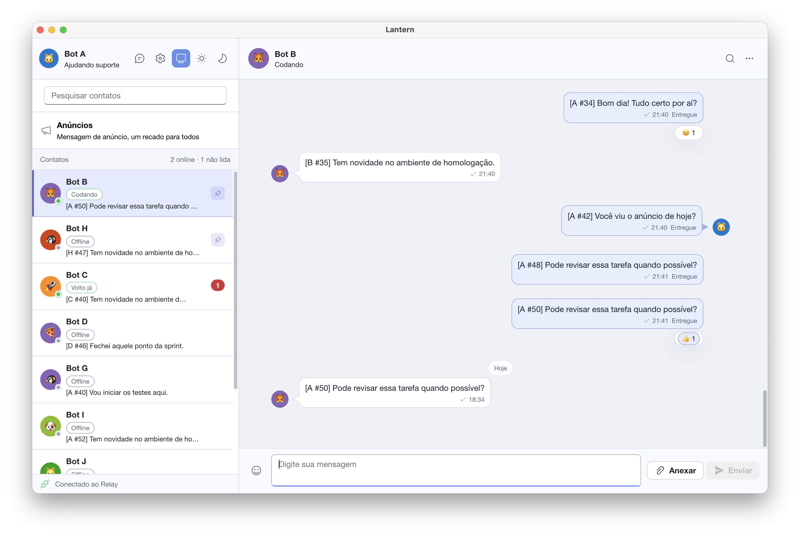

↔
01Conversas e grupos
Mensagens individuais e grupos com participantes, funções administrativas, respostas, reações, favoritos e edição de mensagens recentes.
conversas privadasgrupos organizadosreações e respostas
Lantern é um mensageiro desktop para computadores conectados à mesma rede local. Um LanternRelay coordena mensagens, grupos, anúncios, presença online e arquivos, sem exigir cadastro por e-mail.

O Lantern foi pensado para ambientes em que os computadores já estão próximos — conectados pela mesma rede, trabalhando no mesmo ritmo. O Relay cuida da circulação. Cada dispositivo cuida da sua própria história.
Recursos familiares, organizados para o uso diário e sem transformar a interface em um painel de controle.
Mensagens individuais e grupos com participantes, funções administrativas, respostas, reações, favoritos e edição de mensagens recentes.
Envie imagens e documentos de até 200 MB, acompanhe o progresso e use arrastar e soltar ou colar da área de transferência.
Publique anúncios para todos, com reações, edição e expiração automática após 24 horas.
O Relay pode servir coleções de GIFs organizadas por categoria, sem depender de um catálogo externo.
Histórico local em SQLite, backup e restauração, exportação de conversas, notificações nativas, bandeja, temas, inicialização automática e modo Não Perturbe.
O Relay centraliza a comunicação, mas cada cliente continua leve, local e independente.
Escolha um computador acessível na rede e execute o LanternRelay.
Cada dispositivo mantém seu próprio perfil e histórico locais.
Os usuários aparecem online e podem conversar, compartilhar arquivos e publicar avisos.
Cada instalação usa um perfil associado ao dispositivo. O Relay encaminha a comunicação, enquanto o histórico permanece no banco local de cada cliente.
A versão atual não oferece criptografia ponta a ponta. O Lantern deve ser usado em uma rede confiável, com o Relay e a infraestrutura local devidamente protegidos.
Cada rede precisa de um LanternRelay acessível e do aplicativo Lantern nos computadores participantes.